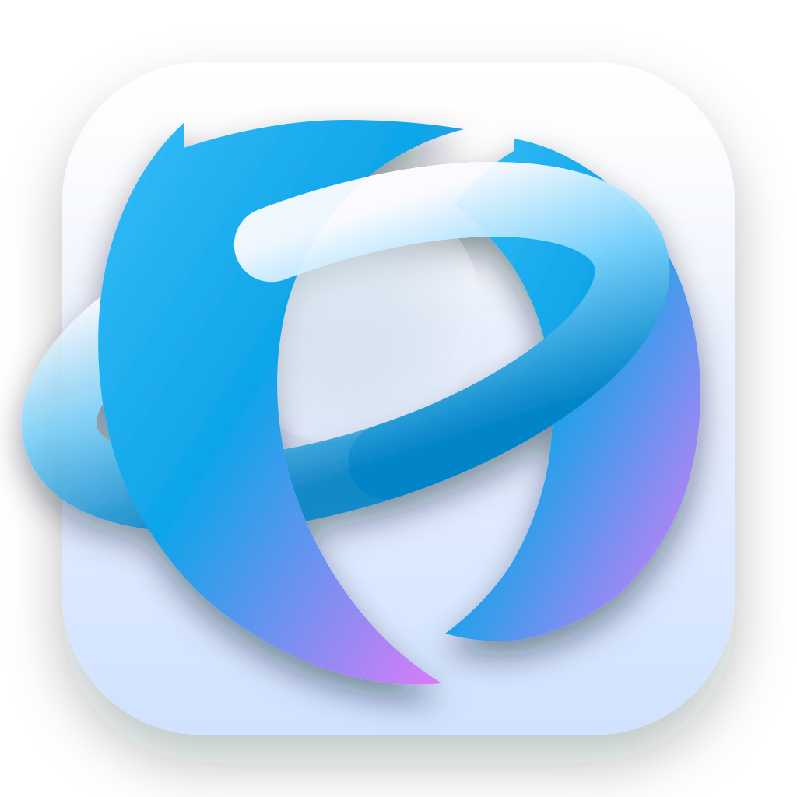

基础
外观
搜索引擎
启动与行为
高级
隐私与安全
网络与代理
密码与自动填充
AI 和扩展
STAR Pilot 行为
扩展与插件
工具
翻译
快捷键
自定义 Binds
关于
关于与更新
浅色主题
默认（蓝紫）
柔和浅白
薄荷绿色
雾面灰
樱花粉
自定义颜色…
自定义浅色主题背景色
窗口按钮样式
红绿灯样式（macOS 风格）
经典 Windows 三键
按钮位置
左侧
右侧
选择窗口控制按钮使用红绿灯样式还是 Windows 三键， 并设置它们在标题栏左侧或右侧显示。
标题栏右侧图标
新建标签按钮
上移
下移
刷新按钮
上移
下移
搜索按钮
上移
下移
书签按钮
上移
下移
历史按钮
上移
下移
下载按钮
上移
下移
插件按钮
上移
下移
STAR Pilot 按钮
上移
下移
勾选来显示或隐藏标题栏右侧的图标，使用上移和下移按钮来调整顺序。
启动与行为
隐私与安全
网络与代理
密码与自动填充
AI 和扩展
更改 STAR Pilot 智能侧边栏
豆包
腾讯元宝＆DeepSeek
ChatGPT
Claude
Gemini
千问Qwen
扩展与插件
管理浏览器扩展、启用或禁用插件，并清理不需要的项目。
扩展管理
导入扩展
从 CRX 文件导入
翻译
自定义 Binds
关于与更新

Hira
版本 v26.140.3 (正式版本) (64 位)
Chromium 内核版本 v140.0.0.0
更新
检查更新
将在新标签页打开 Higheri 官网以获取最新版本信息。
版权与项目
此浏览器基于
Chromium 开源项目
及其他
开源软件
。
Hira
© STAR HigheriTech 信息活力 工作室。保留所有权利。